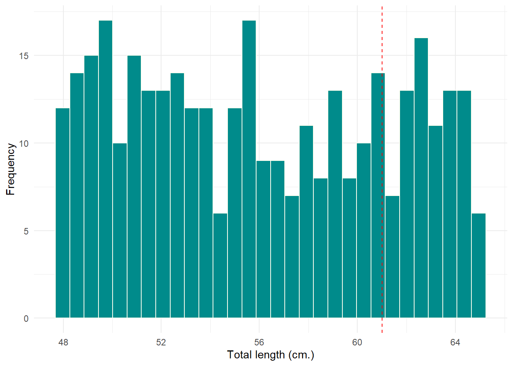
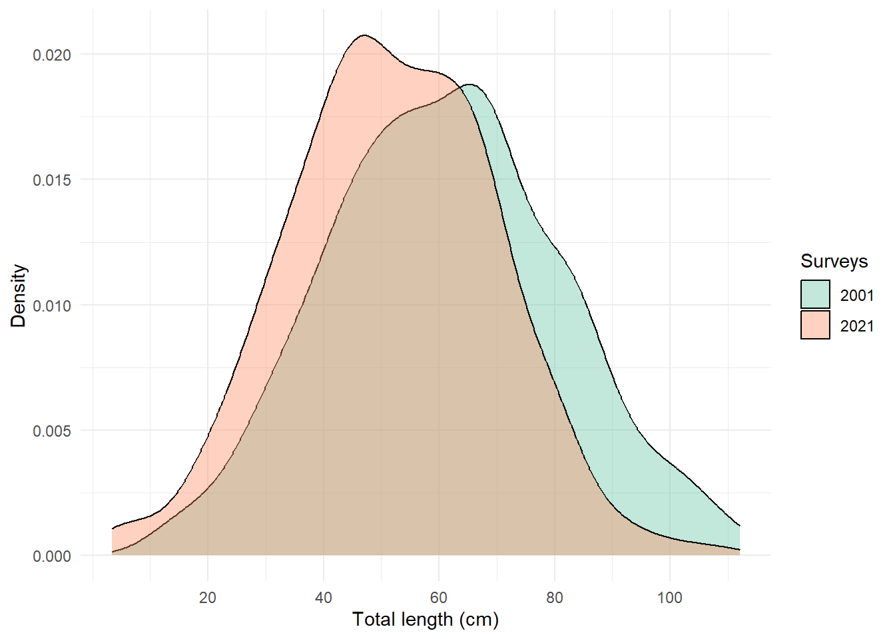

![]()
require(tidyverse)
require(patchwork)
require(magrittr)Inferential statistics in R:ttest
Analysis
Visualization
A formal statistical test called a hypothesis test is used to confirm or disprove a statistical hypothesis. The following R hypothesis tests are demonstrated in this course.
- T-test with one sample
- T-Test of two samples
- T-test for paired samples
Each type of test can be run using the R function t.test().The function comes with the following arguments;
t.test(x, y = NULL,
alternative = c("two-sided", "less", "greater"),
mu = 0, paired = FALSE, var.equal = FALSE, conf.level = 0.95, ...)where: \(x\) and \(y\) are the vectors of data elements \(alternative\): the stated alternative hypothesis \(mu\): the true value of the mean \(paired\): whether or not to run a paired test \(var.equal\): whether to assume that the vaarinaces between the values in the vector are equal \(con.level\): The confidence level to use
Before we proceed, we need functions from various packages and accessing these functions when needed may render this task tedious. Therefore, lets load the packages in advance. These packages include tidyverse (Wickham and Wickham 2017), patchwork(Pedersen 2020) and magrittr(Bache and Wickham 2014)
One sample t-test
One sample t-test is widely used in statistical analysis to determine whether the population’s mean is equal to given mean value. The given mean value can be the sample mean for instance. A t.test function in R is used to test one sample parametric test. Let’s consider a situation where we want to determine whether the total length of Nile perch collected during a survey conducted in December 2022 is not equal to a long term mean length of 61cm. Let’s generate a sample by creating a data frame that contain sample of 350 individual of nile perch. Using a run_if function help us simulate weight of nile perch once given the minimum and maximum values. The code for simulating the total length is highlighted in the code chunk below;
sample = tibble::tibble(
id = 1:350,
tl = runif(n = 350, min = 48, max = 65)
)
sample# A tibble: 350 x 2
id tl
<int> <dbl>
1 1 61.3
2 2 49.7
3 3 50.4
4 4 48.5
5 5 54.9
6 6 57.3
7 7 60.6
8 8 61.9
9 9 50.4
10 10 49.0
# ... with 340 more rowsLet’s use a histogram to check the distribution of the data and add a vertical line of the population mean to identify whether the data is leading away is around the population
sample %>%
ggplot(aes(x = tl)) +
geom_histogram(bins = 30, color = "ivory", fill = "cyan4")+
geom_vline(xintercept = 61, linetype = 2, color = "red")+
scale_x_continuous(name = "Total length (cm.)", breaks = seq(40,80,4)) +
scale_y_continuous(name = "Frequency") +
theme_minimal()

Now we notice that the position of the population mean of the sample dataset, we can not test to determine whether the sample mean total length is lower than the sample mean
sample %$%
t.test(x = tl, mu = 61, alternative = "less")
One Sample t-test
data: tl
t = -17.907, df = 349, p-value < 2.2e-16
alternative hypothesis: true mean is less than 61
95 percent confidence interval:
-Inf 56.50406
sample estimates:
mean of x
56.04797 The one sample t-test determine the whether the sample mean total length of nile perch was less than the long-term mean length suggest that the sample total length (56.68cm) was less than the population mean (61cm) and the difference was statistically significant (t(349) = -18.19, p < 0.001). Lets try change the alternative to greater
sample %$%
t.test(x = tl, mu = 61, alternative = "greater")
One Sample t-test
data: tl
t = -17.907, df = 349, p-value = 1
alternative hypothesis: true mean is greater than 61
95 percent confidence interval:
55.59189 Inf
sample estimates:
mean of x
56.04797 Notice that the test is not statistically significant (t(349) = 18.91, p = 1) because the population mean (61cm) is greater than the sample mean (56.68).
Two Sample t-test
A two sample t-test is used to determine whether the means of two independent samples are equal. Lets consider that two independent survey to measure the stock of nile perch was conducted in two independent period. The first survey was conducted in June 2001 and the subsequency survey was conducted in July 2021. The two survey were conducted during the cool and dry season but with a 20 years time difference. Therefore, we want to determine whether the mean sample of nile perch collected in 2021 is smaller than the those sampled in 2001
set.seed(1254)
sample2 = tibble::tibble(
id = 1:350,
tl21 = rnorm(n = 350,mean = 52, sd = 18),
tl01 = rnorm(n = 350, mean = 61, sd = 20)
)
sample2# A tibble: 350 x 3
id tl21 tl01
<int> <dbl> <dbl>
1 1 41.7 54.4
2 2 68.4 52.2
3 3 47.1 69.1
4 4 38.7 43.2
5 5 3.41 46.9
6 6 42.6 64.3
7 7 67.3 70.4
8 8 65.7 72.9
9 9 26.3 25.0
10 10 56.2 64.5
# ... with 340 more rowsOnce we have created a dataframe with values for the two sampling survey, it’s a good practice to visualize the value to see the patterns.
sample2 %>%
pivot_longer(cols = tl21:tl01) %>%
ggplot(aes(x = value, fill = name))+
geom_density(position = "identity", alpha = .4)+
scale_fill_brewer(name ="Surveys" ,palette = "Set2", label = c("2001", "2021"))+
scale_x_continuous(name = "Total length (cm)", breaks = seq(20,150,20))+
scale_y_continuous(name = "Density")+
theme_minimal()
We notice from a figure above a slight difference in the density shape with the median value for 2001 far east from the 2021, suggesting the size of 2001 is relatively higher than 2001. Let’s perform two sample t-test to determine whether that difference is significant;
sample2 %$%
t.test(x = tl21, y = tl01, alternative = "less")
Welch Two Sample t-test
data: tl21 and tl01
t = -6.4619, df = 690.02, p-value = 9.771e-11
alternative hypothesis: true difference in means is less than 0
95 percent confidence interval:
-Inf -6.905485
sample estimates:
mean of x mean of y
51.80015 61.06788 The output display the Welch Two Sample t-test to determine whether the total length of nile perch sampled in 2021 is less than those of 2001. The result suggest that the sample mean in 2021 was 51.8 cm which is less than 61.07 cm of nile perch sampled in 2001. The result suggest that the 2021 nile perch were small in size than those of 2001, and the difference was significant (t(690) = 6.46, p < 0.01).
Paired sample t-test
This test is normally used to determine whether the values in paired dataset have different mean. For instance, the weight in nile perch measured after captured and kept in cage for three months and measured again. Therefore, the nile perch individuals were measured before taken to cage and then measured after three months. This means we have measurement before and after. Let’s create a dataframe and simulate before and after total length of nile perch.
set.seed(1254)
sample3 = tibble::tibble(
id = 1:50,
before = rnorm(n = 50,mean = 52, sd = 12),
after = before + rnorm(n = 50) %>% abs()
)
sample3# A tibble: 50 x 3
id before after
<int> <dbl> <dbl>
1 1 45.1 46.2
2 2 62.9 64.7
3 3 48.7 49.3
4 4 43.2 43.6
5 5 19.6 20.4
6 6 45.7 46.1
7 7 62.2 63.2
8 8 61.1 62.5
9 9 34.9 35.2
10 10 54.8 56.0
# ... with 40 more rowsThen we perform paired sample t-test
sample3 %$%
t.test(x = before, y = after, paired = TRUE)
Paired t-test
data: before and after
t = -11.171, df = 49, p-value = 4.484e-15
alternative hypothesis: true difference in means is not equal to 0
95 percent confidence interval:
-0.9512640 -0.6612062
sample estimates:
mean of the differences
-0.8062351 Since the p < 0.05, we reject the null hypothesis that the mean total length before and after is significant. Therefore, fattening nile perch in cage for three months increased the total length and that increase is significant (t(49) = -11.17, p < 0.001)
Cited Materials
Bache, Stefan Milton, and Hadley Wickham. 2014. Magrittr: A Forward-Pipe Operator for r. https://CRAN.R-project.org/package=magrittr.
Pedersen, Thomas Lin. 2020. Patchwork: The Composer of Plots. https://CRAN.R-project.org/package=patchwork.
Wickham, Hadley, and Maintainer Hadley Wickham. 2017. Tidyverse: Easily Install and Load the ’Tidyverse’. https://CRAN.R-project.org/package=tidyverse.